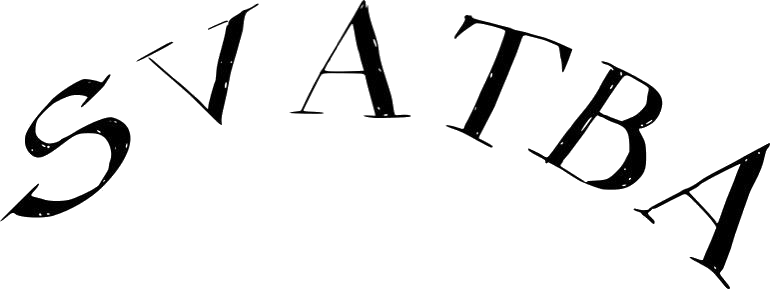
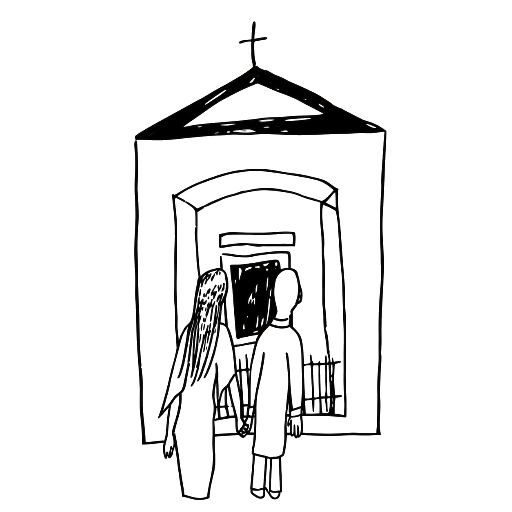
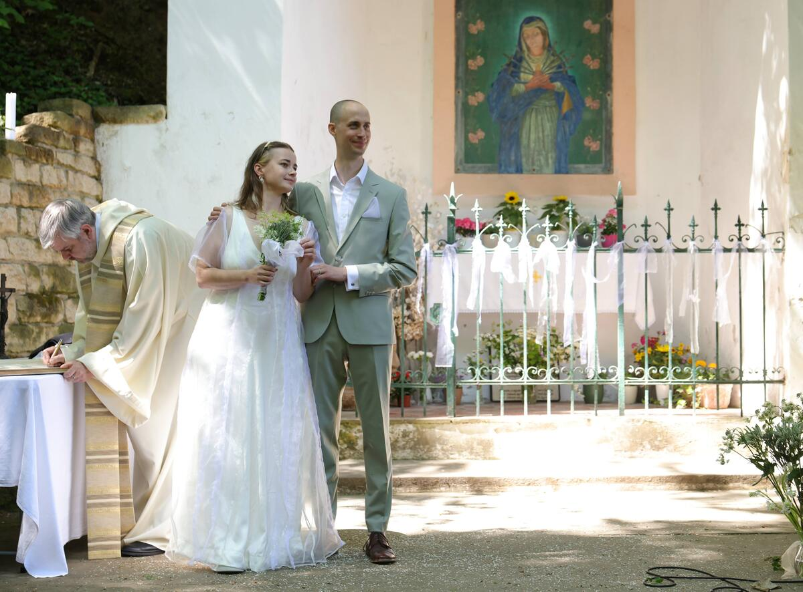
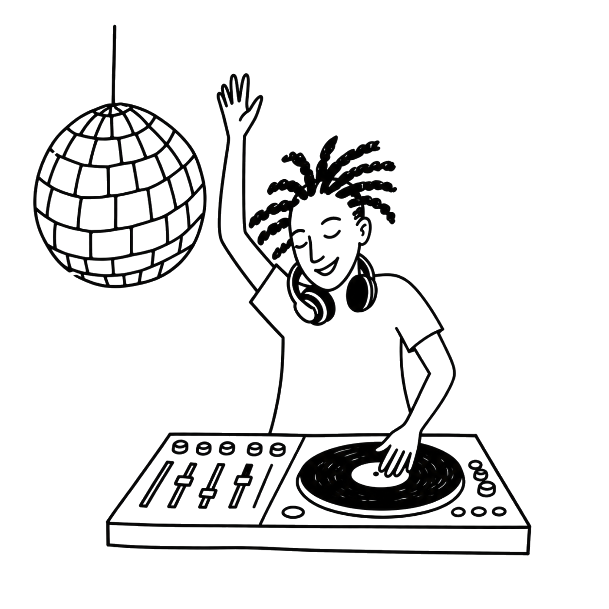
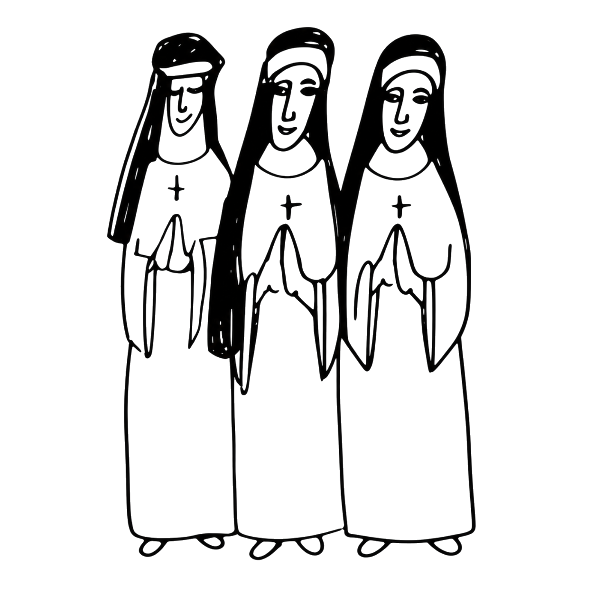
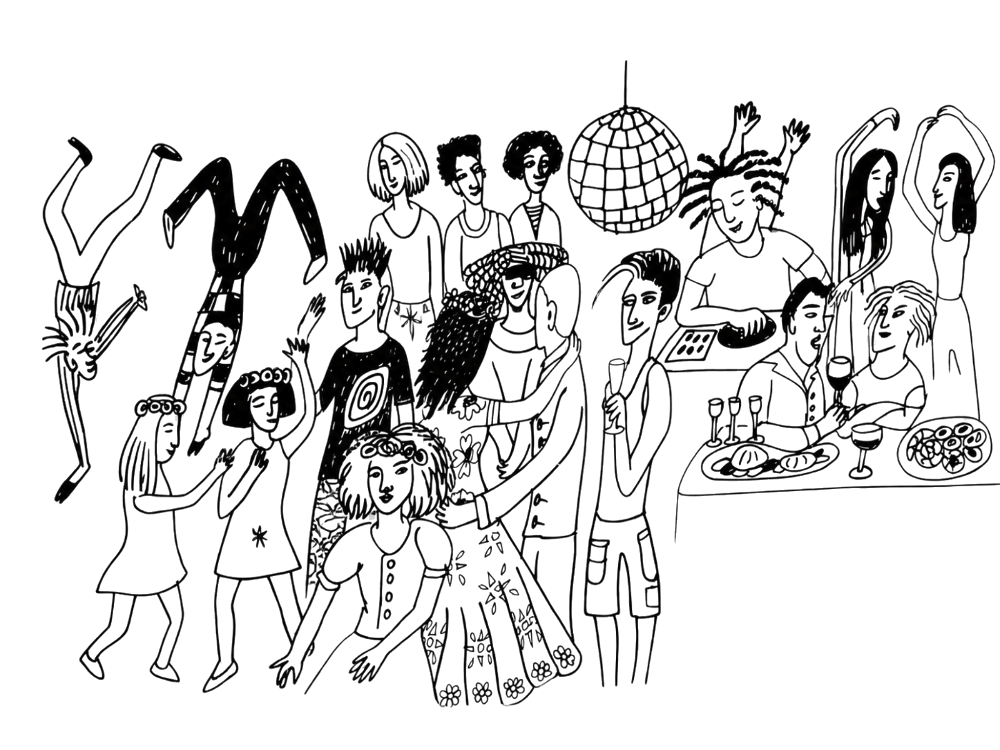
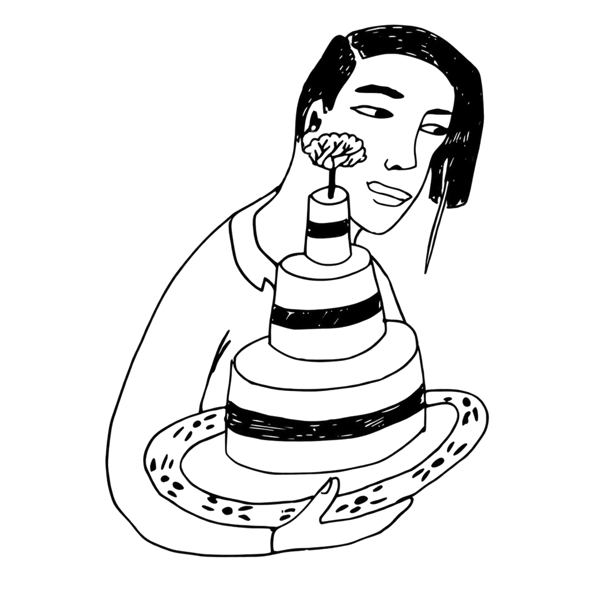
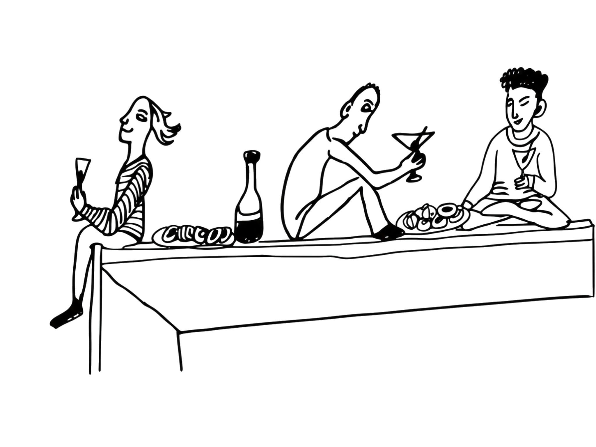
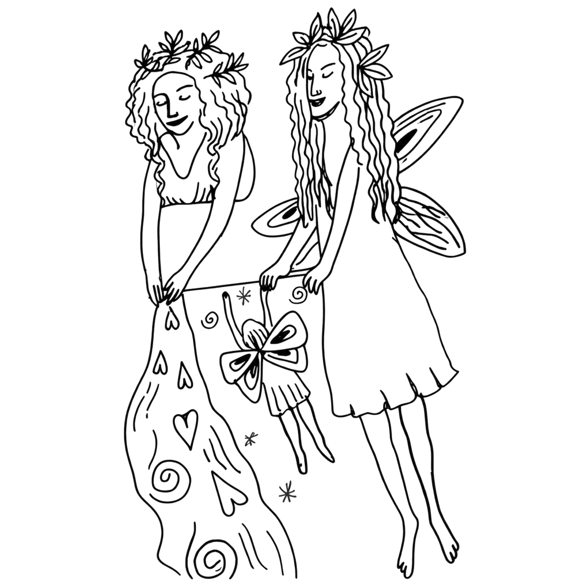
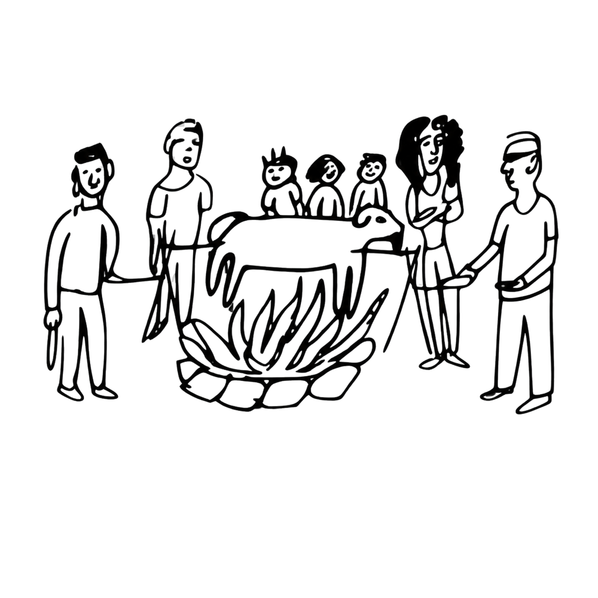

Milé svatebčanky, milí svatebčané, milá svatebčaňata,
Jsme moc vděční za krásný sváteční den, který jsme spolu minulou sobotu strávili*y. Děkujeme, že jste za námi přijeli*y z blízka i daleka, že vás bylo tolik a za krásnou atmosféru, kterou jste vytvořili*y. Fakt si toho vážíme. My jsme si svatbu moc užili*y, tak doufáme, že vy taky!
Je nám samozřejmě líto, že jsme si se všemi nestihli*y popovídat pořádněji. Budeme to v následujících měsících a letech postupně napravovat.
Moc vám děkujeme za krásné, vtipné, nápadité i velkorysé dary a věnování. A děkujeme všem, kdo něco napekli*y a přispěli*y ke svatební hostině.
Taky nás potěšily vaše super jarní, vílí a studánkové outfity 🌱
Děkujeme všem, kdo přinesli*y vybarvenou pozvánku! Něco s nimi vymyslíme a pozvánky vám pošleme zpět k archivním účelům.
Do google alba na tomto odkazu prosím nahrávejte svoje vlastní fotky. A do tohoto alba budeme postupně nahrávat reprezentativní výběr.
Ztráty a nálezy jsou ve složce tady. Pište nám, prosím, nebo komentujte přímo na fotky. Zajistíme zpětnou distribuci.
Ještě jednou díky a mějte se všichni přes léto krásně ☀️
AaA

23. května 2026
V pražských Lysolajích
si vzájemně udělí a přijmou svátost manželství.
Udělá nám moc velkou radost, když nás budete
doprovázet u obřadu i na následné veselce.



Dary: S dary si moc nelamte hlavu. Nejvíc oceníme příspěvek na svatební veselí, případně nějaké dílko vlastní autorské tvorby ))

Pečení a občerstvení: Vy, kdo jste v dotazníku slíbili*y něco k snědku, moc děkujeme – počítáme s vámi a těšíme se na ochutnávku.
Páteční přípravy: Velký dar je pro nás i vaše pomoc s přípravami v pátek v Polepšovně. Bude nás hodně, tak to snad bude víc zábava než práce. Večeře bude formou opékání a piva.

Nedělní úklid: V neděli ráno budeme rádi za pomoc s dojídáním a úklidem.

Dress code: jaro, víly, studánka To znamená, že outfit nemusí být úplně formální, ale budeme rádi, když budete hezcí a hezké, barevní a barevné. Nedoporučujeme podpatky, zohledněte taky počasí a svoje pohodlí – většina aktivit bude probíhat venku.
